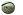

22nd April 2010
test test...
22nd April 2010
Best of luck to the senior hurlers who take on St. Lachtains in the first round of the league in Urlingford at 6:30pm on Saturday. Everyone please come and support them and enjoy what should be a great game.
22nd April 2010
No Lotto winners this week.
2nd April 2010
This week's winning Lotto numbers are 4, 7, 10, 13 with the bonus number 27. No jackpot winner this week. Match three winners and receive 33 euro. Congratulations to Pat and Eileen Delaney who matches three numbers!
29th March 2010
Ronan Tynan tickets now on sale. Contact any committe member. Please spread the word, its a great opportunity for the club to make money. Tickets only 37.50 euro.
19th March 2010
Under-10 training tomorrow at 10:20am, weather permitting.
12th March 2010
Registration fees for all underage players are now due. Please fix up with Seán Whyte.
12th March 2010
There will be an Under-14 match in the field tomorrow, 13th March at 3:30pm. Players please be there at 3pm. Please support.
3rd March 2010
There is a GAA coaching course this Saturday 6th March from 10am to 2pm in Coláiste Mhuire, Johnstown. All coaches and selectors are welcome. Bring a tracksuit and hurley.
3rd March 2010
This week's winning numbers in the Kilkenny GAA Lotto were 3, 4, 12, 27 and the bonus number was 21. There were no local winners.
1st March 2010
Kilkenny kicked off there 2010 National League campaign yesterday with a win over Offaly in Nowlan Park, 1-17 to 0-12. Well done to the three Fenians who started the game: PJ Ryan, JJ Delaney and PJ Delaney.
1st March 2010
The following are the provisional fixture dates for the St. Canices Credit Union Senior Hurling League 2010:
Saturday 8th May
Sunday 30th May
Thursday 8th July
Sunday 15th August
15th January 2010
The Fenians Dinner Dance was held in Cillin Hill on 12th February. Two hundred and seventy people attended. Medals were presented to the minor team, who won the Roinn B county final last year. Also presented with plaques were the five Fenian men who were nominated for the GAA Centenery Team; Ger Henderson, JJ Delaney, Pat Henderson, Pat Delaney and Billy Fitzpatrick. Congratulations to all involved and thans to everyone for their support.
16th January 2010
The Fenians AGM took place on the 16th of January and was very well attended. The Chairman thanked all for attending. He praised the work being carried out at underage level in the club and congratulated the great achievements of the Minor team who won the Minor B county final.
At senior level he commended the work that had been carried out during the year by Mick O'Flynn and his selectors and thanked them for their commitment and wished the senior team all the best in the year ahead. Martin Glesson was ratified as the new senior manager. Billy Fitzpatrick and Brian Ryan were ratified as his selectors.
The Chairman then spoke about the up and coming dinner dance which will take place on the 12th February in Cillin Hill and asked all members and supporters to come along on the night.
He finished off by thanking all involved in the day to day running of the club and wished all teams the best of luck for the coming year.
The following officers were elected for 2010:
Chairman: James Tobin
Vice-Chairman: Pascal Ryan
Secretary: Anna Ryan
Treasurer: Paul Fitzgerald
PRO: John Maher
Bord Na nÓg: Seán Whyte
Northern Board Delegate: Seán Warren
County Board Delegate: Pat Henderson
Registrar: Eoin O'Meara
Thanks to all involved and all the best in the coming year.
16th January 2010
The Fenians Golf Classic in August was great success. A big thanks to all involved.
16th January 2010
Apologies for the lack of news updates in recent times.
28th October 2008
The club has finished its business on the field for another year. Thanks to all involved, from players to coaching staff and board members, from groundsmen to club-members and from parents to supporters. See you all again bright and early next year!
27th October 2008
Congratulations to JJ on claiming his fifth All-Star award recently. Many will feel that the club are unlucky not to have a second All-Star also this year. Well done again to the three men who helped Kilkenny claim their historic three-in-a-row!
26th October 2008
Hard luck to the U-21s, who bowed out at of the Championship at the North Semi-Final stage after a narrow, two-point loss to St. Patrick's of Ballyragget today.
24th October 2008
The Under-21s North semi-final against Ballyragget will be played at 1:30pm tomorrow, Saturday 25th October, in Freshford, and not at 2pm as is indicated on some of the fixtures lists. Best of luck to the lads!
29th September 2008
The Under-21s are out in the North Quarter Final against Young Irelands, at 4pm in Palmerstown next Saturday the 18th October. Please support.
29th September 2008
Comiserations to both the Fenians seniors and the Under-14s who both lost at the weekend. These were the two remaining Fenians teams in competitions this year.
The seniors lost to Carrickshock in the county quarter-final while the U-14s lost to Graignamagh in the League Final.
26th September 2008
After knocking out Dunnamaggin in the first round last weekend, the seniors are out again this Sunday at 4pm in Nowlan Park against Carrickshock. The U-14s are also out this weekend, and will be looking for revenge when they play Graignamangh in the League Final in John's Park on Saturday at 11am. Best of luck to all involved.
18th September 2008
Best of luck to the seniors who will plan Dunnamaggin in Nowlan Park on Sunday at 1pm.
15th September 2008
Congratulations to all the Fenians who made the clean sweep at intercounty level possible! Well done to PJ, JJ and PJ on winning the historic 3-in-a-row at senior level, and overtaking Cork in the process!
Congratulations also to Pat McCormack who was a selector with the U-21s who beat Tipp in the final on Sunday.
Well done also to Briain Ryan who was part of the county minor setup that claimed the All-Ireland title when beating Galway.
Fair play also to the different hurlers who were part of the different county panels over the course of the year.
15th September 2008
Comiserations to the U-14s who lost the county final at the weekend. The guys have every reason to be proud of themselves though after having a great year in both the league and championship. Some were also involved in the team that won the Féile na nGael.
We're looking forward to seeing more from you guys next year, some at U-14 again and some at U-16! Well done!
12th September 2008
Best of luck to the U-14s in the county final this weekend! The final will take place in St. John's Park on Saturday at 5:30. Please support.
5th September 2008
All the best to PJ, JJ and PJ on Sunday in the All-Ireland Senior Final! Also to Pat McCormack and Briain Ryan, who have helped guide the county U-21s and minors to their respective All-Ireland Finals!
17th August 2008
Despite a spirited fight-back in the last 15 minutes, Fenians lost their final league game to James Stephens last night on a scoreline of Fenians 3-6, James Stephens 0-19. This means that Fenians will now play Dunamaggin in the first round of the chamionship.
16th August 2008
The Fenians league match against James Stephens has been refixed from this evening and will instead be played at 6pm tomorrow, Sunday 17th August in Freshford.
11th August 2008
Well done to PJ, JJ and PJ on helping Kilkenny secure a place in this year's All-Ireland final after beating Cork in Croke Park yesterday! Keep up the good work lads! Bring on the Tippmen!!!
2nd August 2008
14th July 2008
22nd June 2008
4th June 2008
31st May 2008
7th May 2008
6th May 2008
14th April 2008
14th April 2008
2nd April 2008
15th March 2008
Fenians GAA Club will hold a cabaret in Paschal's Bar on Sunday night, 16th March. All are welcome!
15th March 2008
The club membership is due before the end of March. The amount is €200 or standing order of €17 per month, the same as last year. Anyone wishing to pay can pay to Pascal Tynan or at Sharkeys, Vincents, Ryans of the Cross or Paschal's Bar.
14th March 2008
5th March 2008
Training began some weeks ago and is taking place twice a week every Tuesday and Friday night at 7:30pm in Coláiste Mhuire for the foreseeable future.
1st March 2008
Fenians GAA Club mourns the tragic death of Tommy Ryan, who passed away recently. As you all know, Tommy served the club well down through the years and he will be sorely missed.
Ar dheis Dé go raibh sé.
1st February 2008
The Fenians AGM for this year took place on 27th January and I hope to have a summary of the decisions made here soon.
20th November 2007
The Fenians dinner dance will take place in the Newpark Hotel in Kilkenny this Friday 23rd November. For tickets, you can contact Jimmy Brennan, who can also provide information on buses to the event.
4th November 2007
Apologies for the fact that the site has not been updated in such a long time. Since the last update:
The seniors thrilled us all with a great run in the championship, but four matches in the same number of weeks proved too much as the lads went down to St. Martins in the county semi final.
The juniors reached the league quarter final and were knocked out by Clara, but only after two replays. In the championship, they were unfortunate to be beaten by Young Irelands in the first round.
The U-21s made an unfortunate exit in the first round of the championship.
For full details of all the games at all levels, see
the Fixtures and Results page.
Finally, there's also the obvious need to congratulate the Fenians members of the Kilkenny senior Hurling team who won their 2nd All-Ireland on the trot in September! Well done to JJ Delaney, PJ Ryan and PJ Delaney!
20th July 2007
The All-Ireland intercounty quarter finals fixed for this Sunday have been postponed as a mark of respect for the late Vanessa McGarry, wife of James McGarry, who died in a road accident during the week. The games will now take place next Saturday. See the official GAA website for further details.
18th July 2007
The juniors drew their league quarter final replay with Clara tonight so the second replay will now take place this Sunday in Freshford at 3pm.
11th July 2007
The Fenians juniors will play the first round of the Championship in St. John's Park this Saturday at 7:45pm. Turn up and support the lads!
For a full list of this week's fixtures, see the
Fixtures
section of this site.
5th July 2007
Well done to the minors who beat their close rivals Emeralds in Johnstown this evening on a scoreline of 3-11 to 1-9. UP THE FENIANS!!!
5th July 2007
Senior training will recommence next Tuesday 10th July with the O'Byrne Cup match against Mullinavat down in the field at 8pm.
1st July 2007
Congratulations to the Fenians members of the Kilkenny senior hurling panel, JJ Delaney, PJ Ryan and PJ Delaney on their triumph over Wexford in the Leinster Final this afternoon!
22nd June 2007
Senior training will take a break for a week and will recommence next Friday 29th June.
22nd June 2007
The Fenians seniors lost to Carrickshock this evening on a scoreline of 3-12 to 1-11, thus missing out on a place in the quarter finals of the championship. They will now meet Tullaroan in the first round of the championship in September.
17th June 2007
Congratulations to the Fenians Féile na nGael team who won all their matches on their way to the McMahon Trophy Final, where they were eventually beaten by a stronger Conahy side.
Well done lads on giving yourselves and everyone else a very memorable weekend of great hurling!
Hopefully we will have some pictures of the events uploaded to the Multimedia section of this website shortly. If anyone has any pictures themselves that they would like put up on the site, feel free to email us at feniansgaa@gmail.com.
13th June 2007
Well done to the seniors who beat Dicksboro on a score of 0-15 to 0-12 in Freshford this evening.
12th June 2007
Féile na nGael is coming to Kilkenny!!!
County Kilkenny hosts Féile na nGael this weekend, starting Friday 15th June and ending Sunday 17th June. The Fenians team will compete in the McMahon trophy against:

Galmoy,
10th June 2007
Well done to the Kilkenny team and in particular the Fenians members of the panel, JJ Delaney, PJ Ryan and PJ Delaney. The Leinster final will take place in Croke Park on Sunday 1st July. Best of luck lads!
2nd June 2007
The new dressing rooms were opened this evening. The club wishes to thank all involved on an excellent job.
26th May 2007
The Fenians seniors suffered their first loss of the year when they were beaten by Ballyhale Shamrocks in Nowlan Park this evening. The final score was Shamrocks 2-17, Fenians 0-11.
25th May 2007
There will be a guard of honour for Jim Maher (RIP) tomorrow evening. Club members should meet outside Paddy Broderick's at 7pm.
25th May 2007
The club mourns the passing away of Jim Maher. Jim was an active member of the club both as a player and as a supporter and he will be sadly missed. Members of the Fenians GAA Club offer their condolences to Jim's family and friends.
15th May 2007
There will be training this weekend as usual on Friday evening and also at midday on Sunday.
12th May 2007
The Fenians seniors continued their winning ways with a hard-fought victory over Graigue Ballycallan in Urlingford this evening. The game finished on a scoreline of 2-15 to 0-18.
10th May 2007
The junior match to be played this weekend against Gowran is called off.
4th May 2007
Well done to the Fenians seniors on getting the year off to the best possible start after beating Dunnamaggin in Nowlan Park tonight on a scoreline of 1-18 to 2-13.
4th May 2007
The junior match against Ballinkillen on Saturday has been called off.
1st May 2007
The minors started their year with a resounding win over local rivals Galmoy/Windgap in the field this evening.
22nd April 2007
Hard luck to Coláiste Mhuire on losing the All-Ireland Vocational Schools final. They battled hard and on another day, things could have swung their way. Well done to the Fenians members of the panel on getting as far as they did in the competition.
18th April 2007
Best of luck to the following members of the club who are part of the Coláiste Mhuire senior hurling team to compete in the All-Ireland Vocational Schools Final: Diarmuid Broderick, Kevin Reid, Eoin Phelan, Darragh Tobin, Eoin Shiel, John Henderson, Seán Warren, Damien Delaney, Danny Dermody, Sean O'Gorman, John Sweeney. The match will take place at 6pm on Sunday 22nd April in Birr. Come along and support the lads!
18th April 2007
The junior match this weekend is called off. There will be training as usual Friday evening and a senior practise match in the field at 6:30 on Saturday evening.
16th April 2007
The Juniors have been waiting for a while to get started this year seeing as their first league game was postponed, and they ended up receiving a walkover in their second. But in their first league match proper, they stormed to a resounding 3-10 to 0-7 victory over James Stephens in Johnstown last Friday evening.
16th April 2007
Fenians GAA Club recently held their AGM. Details of such should be up on this site shortly.
16th April 2007
The new Fenians website was launched today. It will offer news from the club, fixtures and results, as well as an insight into the history of the club. If anyone has anything they would like to add to the site such as match reports, photographs or anything at all, feel free to contact the club and we would be happy to put them up. For contact details, well, see 'Contacts' in the menu above!